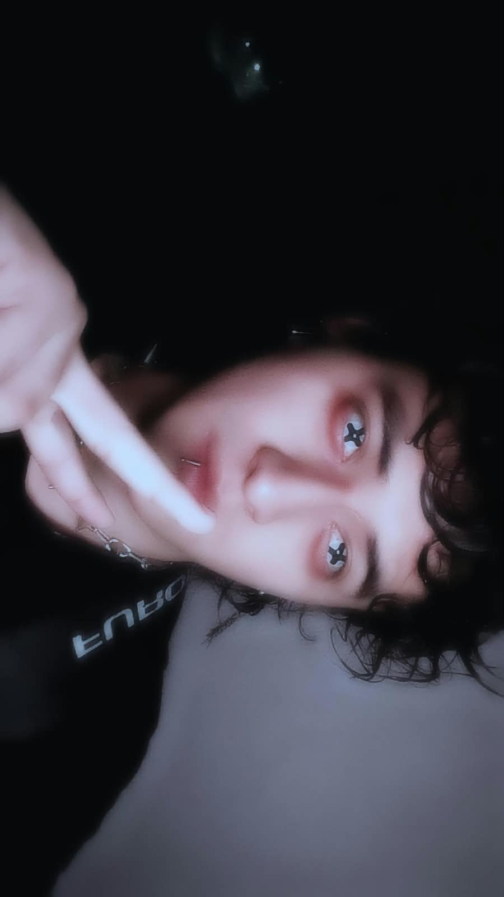

Custer-Slikpnot
Nu-metal/heavy-metal
Unas de las primeras canciones del metal que escuche, gracias a esta canción empecé poco a poco a escuchar metal
Descubrir →Mis canciones favoritas son especialmente de metal, pero en el metal tiene subgéneros y unos de mis favoritos es el black metal, nu-metal y industrial metal. Sin embargo también me gustan otras canciones.

Esta canción me gusta porque me recuerda cuando veía las películas que vendían en los puestos callejeros
Descubrir →Su ritmo me encanta, a su vez siento que el black-metal es uno de los menos entendidos ya que solo se "tratan de gritos"
Descubrir →Canción que me hace volver a creer en el amor. Nos indica que no hay ningún adiós, sino un hasta pronto...
Descubrir →